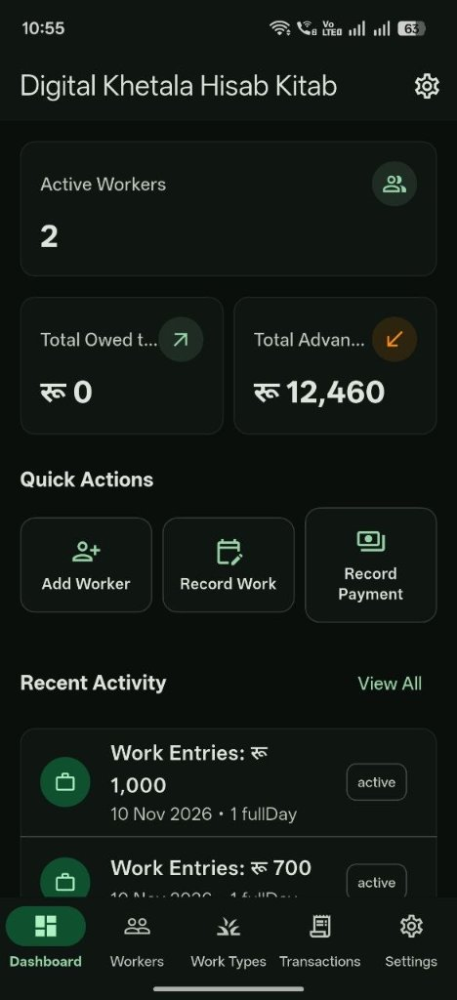
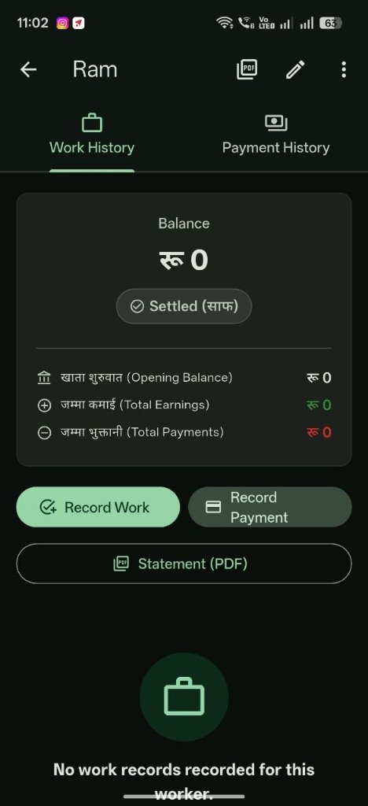

खेतालाको काम र भुक्तानी अब सजिलैसँग व्यवस्थापन गर्नुहोस्।
दैनिक काम, ज्याला, पेश्की र बाँकी हिसाब एकै ठाउँमा।

कागजको खाता किन असफल हुन्छ
कागजी खाताको समस्या
- पानी र चिस्यानले महिनौंको रेकर्ड नष्ट गर्छ
- नपढिने हस्तलेखनले ज्याला विवाद निम्त्याउँछ
- चालु जोड नहुँदा भुक्तानी दिन अन्दाजमा हुन्छ
- खाता हराउँदा भुक्तानीको प्रमाण हराउँछ
- छरपष्ट एन्ट्रीमा धेरै कामदारहरू मिसिन्छन्
डिजिटल खेतालाको समाधान
- सुरक्षित: डाटा स्थानीय अफलाइन बस्छ र क्लाउडमा सिङ्क हुन्छ
- हरेक एन्ट्री सटीक रकमसहित स्पष्ट रूपमा टाइप गरिएको
- प्रत्येक कामदारको चालु ब्यालेन्स तुरुन्तै अपडेट
- जुनसुकै बेला पूरा इतिहास निर्यात र ब्याकअप
- प्रत्येक कामदारको समर्पित प्रोफाइल र खाता

प्रत्येक कामदारको पारदर्शी हिसाब-किताब
कामदारको व्यक्तिगत खता स्क्रिनको झलक। प्रत्येक कृषि मजदुरको कमाई, पेश्की र बाँकी हिसाबको गणितीय शुद्धता सहितको छुट्टै विवरण।
कामदार प्रोफाइल र साफ स्थिति
सुरुवाती ब्यालेन्स, कुल कमाई र भुक्तानीको तत्काल गणना। ब्यालेन्स शून्य हुँदा स्पष्ट हरियो ब्याच प्रदर्शन।
१-ट्याप आधिकारिक PDF विवरण
कामदारको पूरा खता सफा A4 PDF विवरणका रूपमा उत्पादन गर्नुहोस्, प्रिन्ट गर्नुहोस् वा ह्वाट्सएपमा पठाउनुहोस्।
अपरिवर्तनीय अडिट लग
विगतको दर कहिल्यै फेरिँदैन। कुनै विवरण सच्याउनु परेमा कारण खुलाएर रद्द (Void) हुने पारदर्शी प्रणाली।
नेपाली खेतका लागि बनाइएको
पूर्वी नेपालका चिया बगान व्यवस्थापक, आलु खेत मालिक, र कृषि श्रम ठेकेदारहरूको वास्तविक कार्यप्रवाहमा आधारित।
अफलाइन SQLite डेटाबेस
तपाईंको डेटा तपाईंको यन्त्रमा रहन्छ। इन्टरनेट चाहिँदैन। इलामका चिया बगान, झापाका आलु खेत, र पाँचथरका अलैंची बगानमा बिना सिग्नल काम गर्छ।
सटीक पूर्णाङ्क पैसा गणित
प्रत्येक नेपाली रुपैयाँ १०० पैसामा विभाजित। पूर्णाङ्क गणितले ज्याला विवाद निम्त्याउने फ्लोटिंग-पोइन्ट त्रुटिहरू हटाउँछ।
विक्रम सम्बत क्यालेन्डर
नेपाली क्यालेन्डर समर्थन। बैशाख (बैशाख) देखि चैत्र (चैत्र) सम्म महिना अनुसार खाता वर्गीकरण। तपाईंको रेकर्ड नेपालले समय गन्ने तरिकासँग मिल्छ।
कामदार प्रोफाइल र दर
प्रत्येक खेताला कामदारको लागि पूर्वनिर्धारित दैनिक दरसहित प्रोफाइल। मौसमी वा कार्य-आधारित काम जस्तै केजी अनुसार चिया टिपाईका लागि दर परिवर्तन।
लेखापरीक्षित भोइड
गल्ती हुन्छ। भोइड गरिएका एन्ट्रीहरू लेखापरीक्षित रेकर्डको रूपमा सुरक्षित (चुपचाप मेटिँदैन)। पूर्ण इतिहास, पूर्ण जवाफदेही।
PDF विवरण उत्पादन
यन्त्रमा नै A4 PDF विवरण बनाउनुहोस्। WhatsApp वा इमेल मार्फत सिधै साझा गर्नुहोस्। बहु-पृष्ठ इतिहासका लागि २५-पंक्ति खण्ड।
दैनिक रिमाइन्डर
दिनभरको खेतको काम बिर्सनु अघि लेख्न साँझ ५ बजे र राति ८ बजे रिमाइन्डर। स्थानीय रूपमा, कुनै सर्भर चाहिँदैन।
क्लाउड सिङ्क्रोनाइजेसन
क्लाउड फायरस्टोर मार्फत परिवारको हिसाब स्वतः सिङ्क हुने सुविधा। फोन हराएमा वा नयाँ फोनमा सरे पनि हिसाब सुरक्षित रहन्छ।
यसले कसरी काम गर्छ
कामदारहरू थप्नुहोस्
प्रत्येक खेताला कामदारको नाम र पूर्वनिर्धारित दैनिक ज्याला दर सहित प्रोफाइल बनाउनुहोस्।
दैनिक काम रेकर्ड गर्नुहोस्
हरेक दिनको काम लेख्नुहोस्: टिपाइ प्रकार, केजी वा घण्टा, र विक्रम सम्बतमा मिति।
पेश्की व्यवस्थापन
नगद पेश्की (अग्रिम भुक्तानी) रेकर्ड गर्नुहोस् र बाँकी ज्यालाबाट स्वचालित रूपमा कटौती।
भुक्तानी र साझा
सबै एन्ट्री, पेश्की, र बाँकी रकम देखाउने PDF विवरण बनाउनुहोस्। WhatsApp मार्फत साझा गर्नुहोस्।
एन्ड्रोइडमा डाउनलोड
डाउनलोड पृष्ठ खोल्न स्क्यान गर्नुहोस्